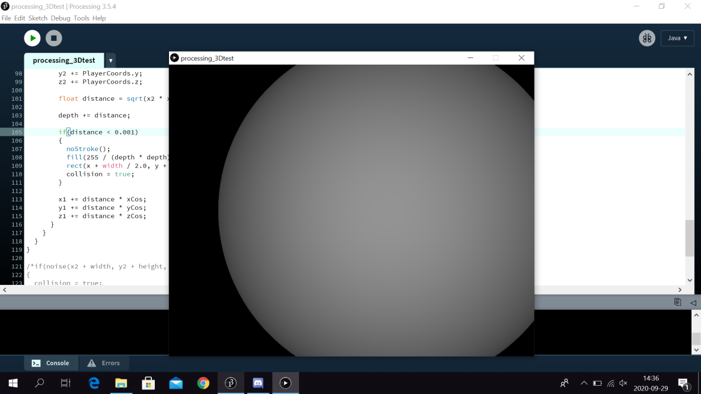

For more information on this topic read this article
Raymarching is a technique very similar to raycasting, although instead of casting 2D rays into a 2D scene, we cast 3D rays represented as vectors into a 3D scene. To be more precise, each ray is casted from an origin point (often referred to as the camera or player) to a plane some distance away from the origin point creating a pyramid-like structure of rays. Each ray is set to correspond with a pixel on the screen (the top-left most ray corresponding to the top-left most pixel and so on). If a ray intersects with an object in the scene we then color the pixel corresponding to the ray using information from the intersection.
The procedure used to find intersections with raymarching is similar to the one used for raycasting. Although before going over it we must first be able to represent 3D objects in 3D space. For primitive objects like spheres or planes there are equations we can use for this.

For more advanced objects this is usually more difficult though, so the
solution is often to describe the object as being made up of more simly
objects like planes.
Once we are able to represent objects in space we need a way to search for
intersections with the objects and the rays. We can do this by making use
of a function known as a "Distance estimator". The distance estimator
finds the distance between a specified point on the ray and an object in
the scene. For complicated shapes we find the distance between every
simple shape that makes it up and then take the smallest of those
distances. Once we have this distance we can move the point on the ray
forward by that distance and measure the new distance from the object.
This is done recursively until the distance is less than some value used
to decide what counts as an intersection. This type of distance estimating
is known as "spheretracing".
For more information on this topic read this article